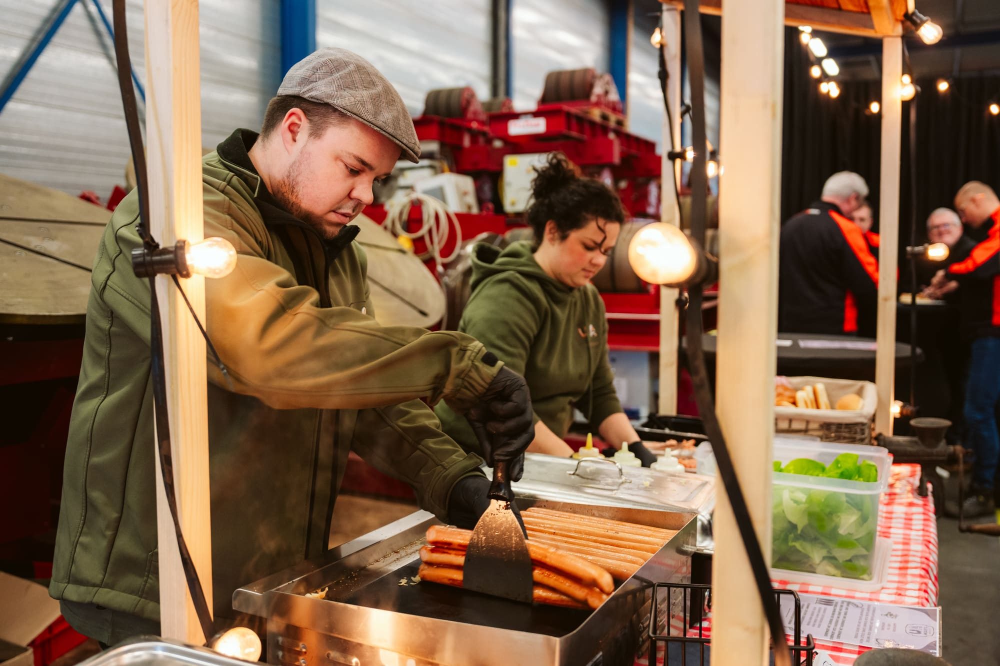
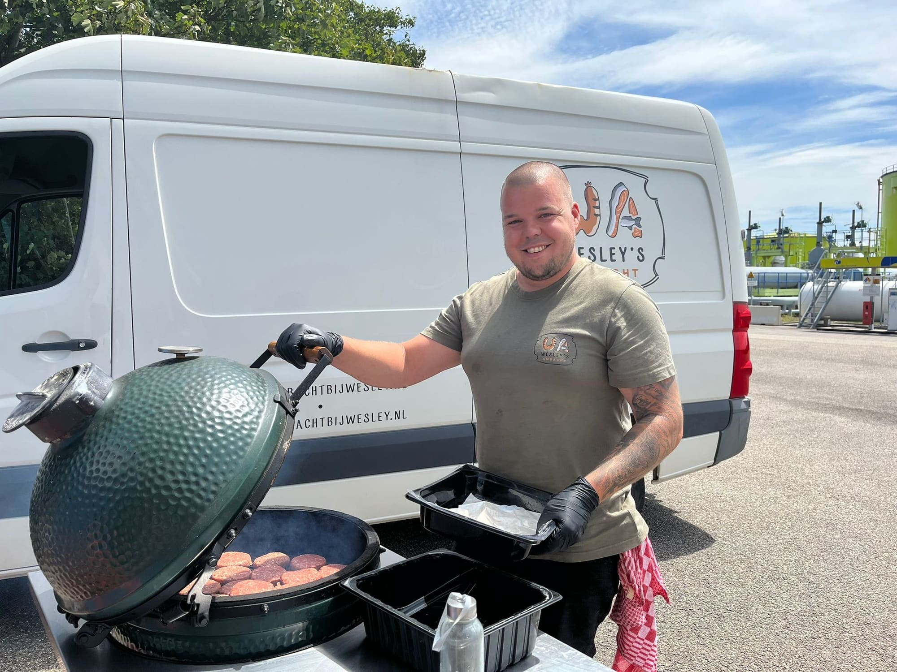
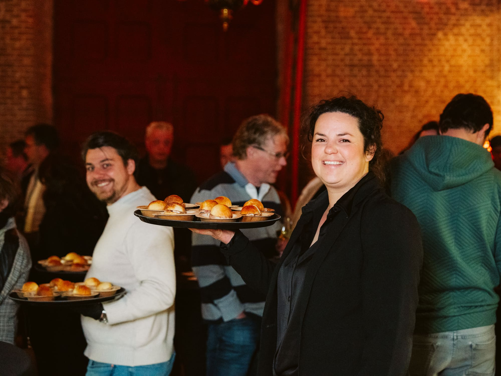
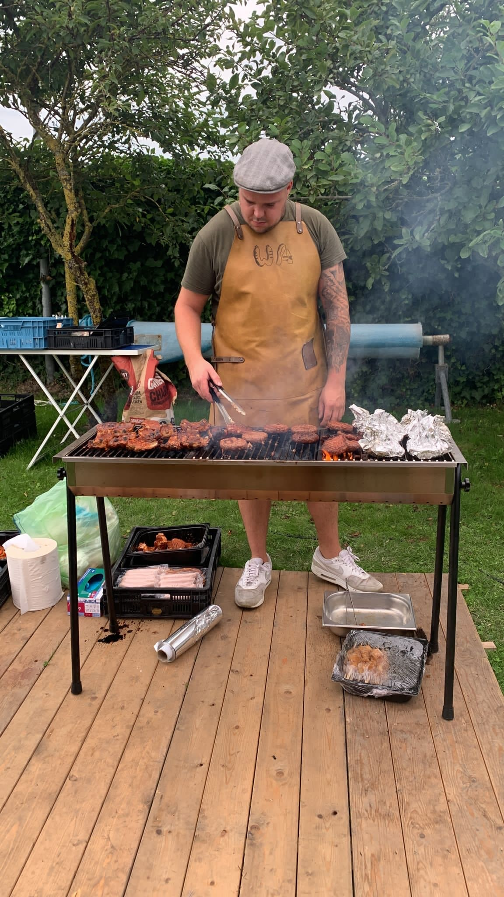
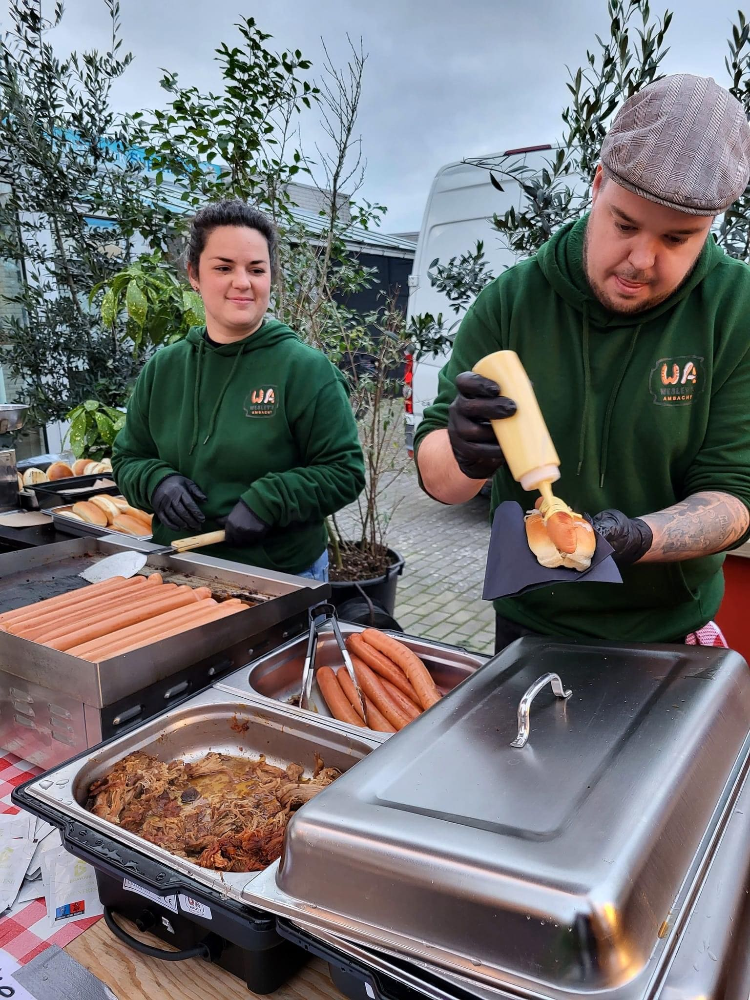

Over ons
Twee mensen, één keuken
Geen poespas, wél eerlijk: gegrild en gerookt vlees en vis, zonder E-nummers, met verse kruiden uit de eigen tuin.

Wesley
Meester van het vuur
Wesley staat achter de grill en de rookoven. Hij bepaalt het vuur, de temperatuur en het moment waarop het vlees klaar is.
Hij rookt zijn eigen zalm en paling. Langzaam, zonder kunstmatige toevoegingen, en dat proef je terug. Bij een barbecue op locatie kiest hij het vuur, en jij kiest wat erop komt.
Marjoleine
Kruidenliefhebber
Marjoleine stuurt de smaken aan met verse kruiden uit de eigen tuin. Zij maakt de gerechten af en houdt de presentatie bij.
Ze haalt de kruiden zelf uit de tuin achter de winkel en maakt de gerechten af. Geen poespas, wel eerlijk eten.

Het ambacht
Zonder E-nummers. Met verse kruiden uit de eigen tuin.
De vismijn staat om de hoek. De rookoven en de grill staan in de winkel. Tussen die twee in ligt alles wat wij maken: vis die over de kade komt, vlees dat over het vuur gaat, en kruiden uit de tuin erachter.



Lokaal samenwerken
Het beste van Stellendam onder één dak
Wij werken met de mensen om de hoek. Verse groenten, vers brood, verse garnalen en vis uit de vismijn.
Klanten
Wat ze ervan vinden
Afgelopen weekend een catering bij Wesley laten bezorgen, top kwaliteit eten goed verzorgd en meer dan voldoende als je per persoon bestelt.
Wat je hier ook haalt, het is een feestje. Je proeft de liefde en ambacht. Heerlijk eten en uitstekende waarde.
Helemaal top! Zowel de koudgerookte zalm als de grillworst (naturel) smaakten meer dan prima. Dikke aanrader.
Heerlijke, eerlijke producten zonder toevoegingen en E-nummers.

Zin in een tafel vol eten?
Vertel ons wat je viert en hoeveel mensen er komen. Wij maken een offerte met een vaste prijs en zorgen voor het vuur.